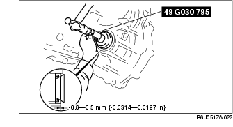

Oil seal replacement [FN4A-EL]
1. Drain the ATF. (See AUTOMATIC TRANSAXLE FLUID (ATF) REPLACEMENT [FN4A-EL].)
- • The oil seal is easily damaged by the sharp edges of the drive shaft splines. Do not let the splines contact the oil seal.
2. Remove the drive shaft. (See DRIVE SHAFT REMOVAL/INSTALLATION.)
3. Remove the oil seal.
4. Using the SST and a hammer, tap a new oil seal in evenly until the SST contacts the transaxle case.

5. Coat the lip of the oil seal with transaxle oil.
6. Install the drive shaft. (See DRIVE SHAFT REMOVAL/INSTALLATION.)
7. Add ATF to the specified level. (See AUTOMATIC TRANSAXLE FLUID (ATF) REPLACEMENT [FN4A-EL].)
8. Carry out the mechanical system test. (See MECHANICAL SYSTEM TEST [FN4A-EL].)